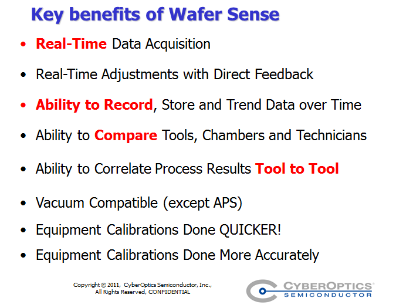
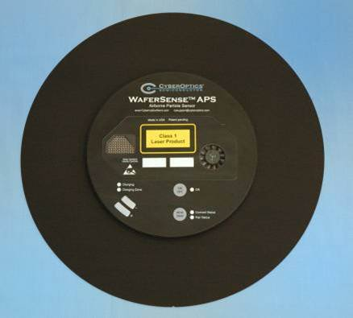
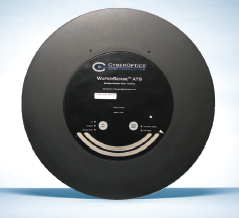
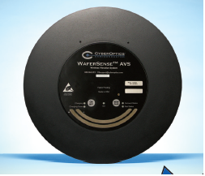
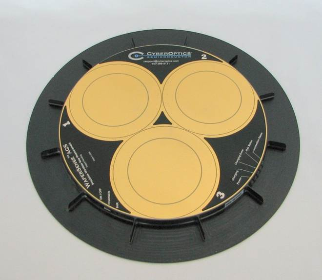
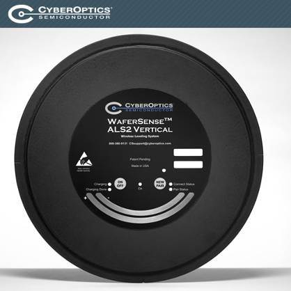
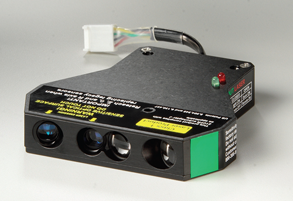
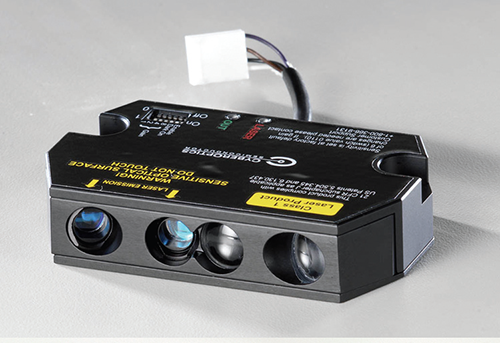

正在尋求提升設備穩定及晶圓良率得方法嗎?
您是否想要針對先進的奈米製程進一步提升生產效率?無論你是想善目前的製程能力或是最佳化您的現有設備CyberOptics Semiconductor 提供您精準穩定且可靠的測量技術取代猜測與想像。WaferSense產品是一種革命性的無線測量系統，已被多數設備商及半導體廠廣泛應用於半導體設備維護;其系列產品包括測量晶圓傳送過程的水平、間隙、定位與偵測震動以及微塵等。

-
晶圓氣體微塵偵測系統 Airborne Particle Sensor(APS)
創新的設計，將偵測能力最小至0.15um的微塵偵測系統設計成類晶圓形狀，能在不打開機台得情況下即時測量設備腔體內部氣體中的微塵粒子數量，並能應用於晶圓自動搬運系統(AMHS)的微塵污染監控。讓您即時分辨微塵污染來源來縮短生產線上的設備維修保養時間。本產品備有8吋和12吋規格。
- 
-
晶圓中心點定位量測系統 Auto Teaching System (ATS)
即時攝影精確提供影像並自動計算出晶圓的中心點偏差數據來取代工程師的眼睛目測。輕薄化的設計能讓機台自動傳入設備內部，省去拆解機台的繁複手續及可讓使用者快速”看到”設備內部並截取三維偏移數據(X,Y,Z)，方便使用者迅速地調校晶圓傳送裝置。本產品備有8吋和12吋規格。
- 
-
晶圓震動量測系統 Auto Vibration System(AVS)
輕薄化的設計能模擬晶圓被傳送的路徑即時顯示三軸加速度和振動，其振動數據亦可以被記錄下來比對不同的傳送路徑或不同機台間的差異比較，以方便使用找出異常的傳送機構，減少微塵污染產生，並縮減設備維修時間及維修週期時間。
本產品備有8吋和12吋規格。
- 
-
晶圓間隙量測系統 Auto Gapping System(AGS)
用以量測的晶圓與shower head、靶材或電擊的間距差距，更精確的控制薄膜製程，如化學氣相沉積、濺鍍和蝕刻製程的均勻度並進一步提升量率。
本產品備有8吋和12吋規格。
- 
-
晶圓水平/垂直量測系統 Auto Leveling System(ALS2) Vertical
以輕薄化設計的第二代ALS可被傳送進半導體製程設備中，即時提供晶圓在設備內各個傳甕定點XY雙軸向的水平傾斜數值，一目了然的軟體即時將量測直接透過藍芽裝置顯現於電腦螢幕上，以方便輔助使用者對於設備安裝和維護過程中能夠快速、準確的調整水平。
除了具備Leveling量測功能，同時增加垂直的角度量測功能。主要用於量測離子植入設備及電鍍設備的調校，協助您更精準的設置晶圓直立角度，以提升製程品質。本產品備有8吋和12吋、18吋規格。
- 
-
Wafer Mapping Sensor EX-Q/EX-QS
此系列提供快速以及可靠的晶片偵測能力，已銷售超過30,000個，被廣泛的應用於半導體設備上，用以偵測晶片位於晶舟
(FOUPs/ Cassette)中的位置。
- 